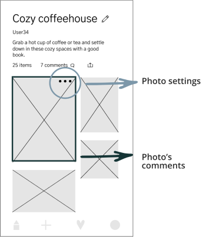
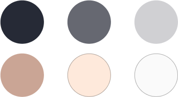

Moodspire
Start with a mood, find inspiration. Create a collection. Ace your next creative project.
View prototypeRoles
User Research • UX Design • Information Architecture • Branding • Visual Design
Deliverables
User Surveys • User Stories • User Personas • User Flows • User Testing • Competive Analysis • Sitemap • Logo Design • Style Guide • Wireframes • Prototype
Tools
Figma • Sketch • InVision • UsabilityHub • Maze • Google Forms
Duration
January 2019 – April 2019
The problem
With an ever increasing competitive cloud storage platform market, it is crucial to find the right set of innovative features in a new platform to succeed in the market.
How can we provide a new way for creatives to source, save & share new visual inspiration that meets their aesthetic needs, right from their fingertips?
The solution
Moodspire is a visual cloud platform that allows users to search for visual content by mood or desired asethetic. Users can save visual content in their own collections or browse other’s.
Whether it be for a professional design project or finding inspiration for personal use, Moodspire is the perfect place to source new visual inspiration, save & share it from others or even upload your own.
The process
Discovery & Research
User research
I created a user survey to better understand the current habits of users already using visual cloud storage platforms.
- 100% of respondants currently use at least 1 of the 10 listed visual cloud platforms
- #1 priority: finding visual inspiration
- Secondary priorities: saving, sharing & organizing visual content
My user research not only helped me understand the current habits of users and focus my research on what features and flows users were already familiar with and found useful as well as where opportunities lay to stand out from other platforms.
Competitive analysis

User personas
Through analyzing my research so far, two themes of users emerged. Professionally, users want a platform where they can easily and quickly source beautiful visual content for creative projects. They need to be able to share and collaborate with other team members and be able to easily reorganize content. For others who pursue their creative projects on a more personal level, users want to easily browse categories of interest, source inspiration, and also have control over how those categories are sorted.
Information Architecture
User stories
- 1 Onboarding
- 2 Search & view visual content
- 3 Organize visual content
- 4 Upload visual content
- 5 Collaborate with other users
- 6 Share visual content
User flows & sitemap
Prototyping & Testing
Wireframes & low fidelity prototype testing
Building off my research, I began the initial sketches for the wireframes for each of the user stories and flows I created earlier. I then used Figma to turn those sketches into a lo-fi prototype. I then tested my prototype with users. I asked users to complete 3 tasks: sign up for an account, add (upload) a piece of content and organize a piece of content to a new collection.
View low fidelity prototypeKey takeaways and action items from user testing:
— Fill out all text fields so that users have a more natural & realistic testing experience
“It wasn’t a confusing flow, I just forgot there wasn’t going to be a keyboard” — User 1
“It was good. With a keyboard it wouldn’t have caught me up at all.” — User 2
— Ensure all icons and design elements have one dedicated function to ensure clarity for users
Visual design
Brand story & logo
I began the branding process through mind mapping, sketch and word association exercises on paper. Keeping the target audience and mission of discovering new visual content by mood grounded my sketches and I explored a variety of concepts refining my sketches down to clouds associating with the cloud storage market and the mood given from cloudy, stormy, rainy day. From here, I chose to merge my idea of the brand name “moodspire” and the concept of a cloud and play with the way that it could be incorporated into the shape of a cloud. I aimed to keep my logo minimalistic and clean.
Colors
Creating a dark interface for the visual cloud platform to place emphasis on the visual content was the root of the colors chosen for the palette. Each warmer, lighter color chosen in the palette was used for text, icons, or to highlight a part of the visual design.
Typography
The sans serif font Gothic A1 was chosen as the sole font for its round, modern & accessible look and feel matching both the logomark and the brand style and aesthetic.
View full style guideHigh fidelity mockups
Testing & refinements
Testing was done using InVision both in person and remotely using the same 3 tasks from earlier testing. From the feedback I recieved, I came up with action items and made several refinements of the high fidelity mockups.
#1. Action items:
- — Improve visibility of collection names
- — Emphasize thumbnail photos by moving contest titles towards bottom of page
Initial design
Revised design
User testing revealed that participants were less inclined to scroll than I anticipated, leaving them less likely to find my call to action button.
#2. Action items:
- — Create a emphasized call to action in more than one location in the app
- — Prompt users to scroll vertically to view content and call to action button
Initial design, CTA button placed only interally on collections
Revised design
Early user testing revealed that separting making a comment on a photo and accessing the photo’s settings with two separate icons and flows was confusing. Preference testing revealed users wanted minimal distraction after accessing a photo’s options.
#3. Action items
- — Clarify the function of each icon
- — Ensure visibility of all necessary icons
- — Create one distinct function for all elements on the screen
- — Emphasize the feature that the user has interacted with with minimal distractions in the background

Initial design
Revised design

“I feel like it makes more sense to see the image more clearly in order to decide what to do with it next.” — preference test participant
Preference test preferred, final design
Conclusion
How was the problem solved?
- — Focused in on providing a service to a specific target audience that was well researched
- — Built out and presented only necessary features outlined by the project brief and researched MVP
- — Ensured that visual hierarchy was clear and mobile screen real estate was effectively utilized
Major takeaways
- — Building off of existent familiar features and patterns can yield really accessible designs. Through my user testing, some of the screens that were most successful and gave the users most confidence navigating through utilized very familiar icons and patterns.
- — Feedback through comments, user and preference testing is a process that should be heavily utilized through the entire design process. I was able to refine my designs through asking for specific feedback from experienced designers as well as collect data from a diverse group of users about what flows and features were effective and intuitive.
- — Keeping the target audience in mind can help inform effective design decisions. While there was an opportunity to style various aspects of the mobile screens I designed, many of my initial ideas that were heavily stylized were not finalized in my high fidelity mockups. My user personas indicated they wanted a way to source a lot of great images and clearly and quickly save and organize photos which helped me make design decisions that benefited my users the most.